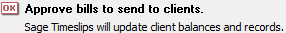
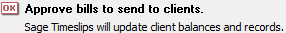

from sikuli import *
import logging
import myTools
from datetime import date
#---------------------------------------------------#
def fSet_BillDate(pMonth):
#---------------------------------------------------#
logging.debug('- change bill date: ' + str(pMonth) + "/27/" + Settings.dataYear)
time.sleep(1)
# open revise date
type("b",KeyModifier.ALT)
type("d")
time.sleep(2)
# go to today
type("t")
#get to 01/01 of current year
type(Key.HOME,KeyModifier.CTRL)
# get to 01/01 of the data year
thisYear = date.today().year
for prevYear in range(int(Settings.dataYear),thisYear):
type(Key.PAGE_UP,KeyModifier.CTRL)
time.sleep(1)
# get to 01/27 of the data year
myTools.pressDOWN(4)
myTools.pressLEFT(2)
for nextMonth in range(pMonth-1):
type(Key.PAGE_DOWN)
time.sleep(1)
type(Key.ENTER)
time.sleep(1)
#---------------------------------------------------#
def fPrint_BillRun(pMonth):
#---------------------------------------------------#
logging.debug('- print bill run for month: ' + str(pMonth))
type("b",KeyModifier.CTRL)
time.sleep(1)
myTools.enterSlipFilter(pMonth,"bill")
# print bills to PDF
logging.debug('-- print')
type(Key.ENTER)
time.sleep(1)
type(Key.ENTER)
wait( ,FOREVER)
type(Key.ENTER)
time.sleep(1)
# approve bills
logging.debug('-- approve')
wait(Pattern().targetOffset(-100,-8),FOREVER)
click(Pattern().targetOffset(-100,-8))
type(Key.ENTER)
waitVanish(,FOREVER)
# close report entry / don't save
logging.debug('-- close report window')
click(
,FOREVER)
type(Key.ENTER)
time.sleep(1)
# approve bills
logging.debug('-- approve')
wait(Pattern().targetOffset(-100,-8),FOREVER)
click(Pattern().targetOffset(-100,-8))
type(Key.ENTER)
waitVanish(,FOREVER)
# close report entry / don't save
logging.debug('-- close report window')
click( )
type(Key.F4,KeyModifier.CTRL)
time.sleep(2)
type("n")
time.sleep(1)
#---------------------------------------------------#
def fPrint_Bills(pMonth):
#---------------------------------------------------#
myTools.sectionStartTimeStamp("bills" + str(pMonth))
logging.debug('Print_Bills: ' + str(pMonth))
# make sure timeslips has focus
myTools.getFocus()
fSet_BillDate(pMonth)
fPrint_BillRun(pMonth)
myTools.sectionEndTimeStamp()
)
type(Key.F4,KeyModifier.CTRL)
time.sleep(2)
type("n")
time.sleep(1)
#---------------------------------------------------#
def fPrint_Bills(pMonth):
#---------------------------------------------------#
myTools.sectionStartTimeStamp("bills" + str(pMonth))
logging.debug('Print_Bills: ' + str(pMonth))
# make sure timeslips has focus
myTools.getFocus()
fSet_BillDate(pMonth)
fPrint_BillRun(pMonth)
myTools.sectionEndTimeStamp()